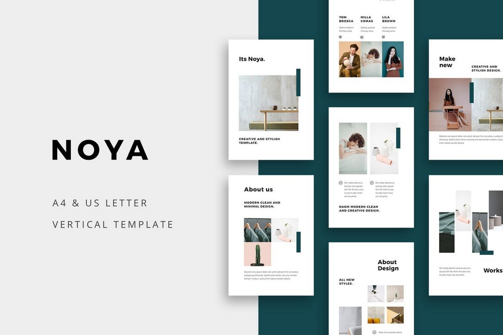
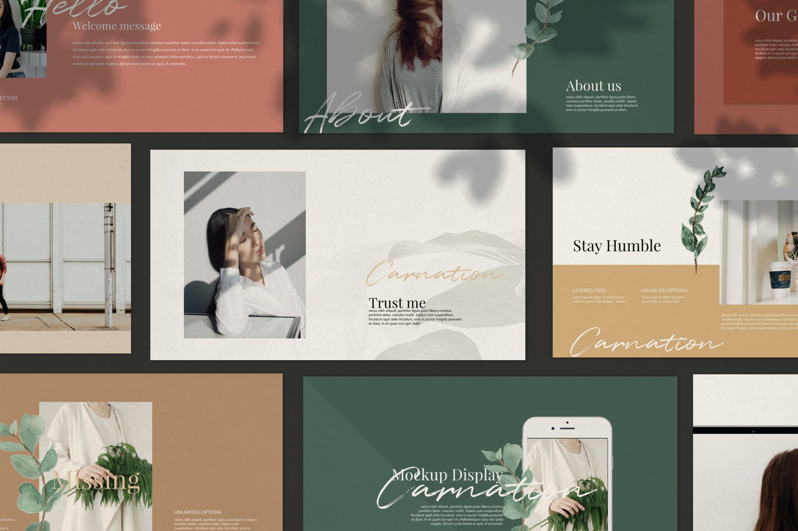
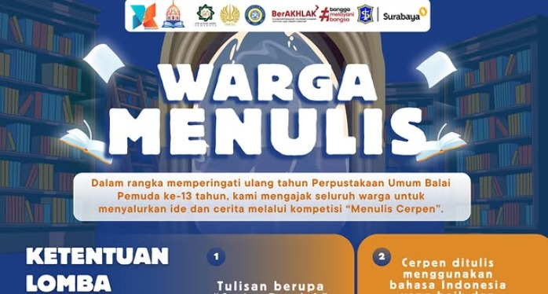
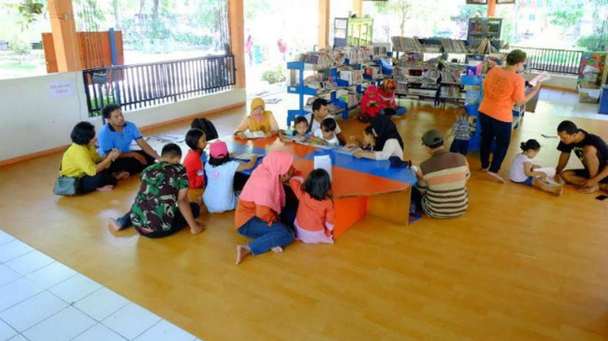
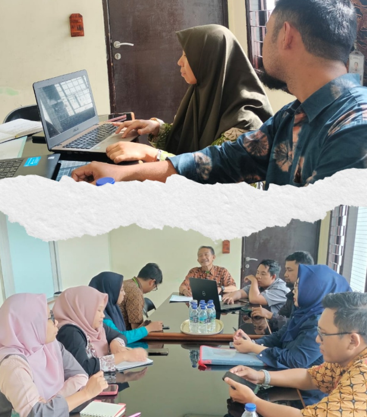
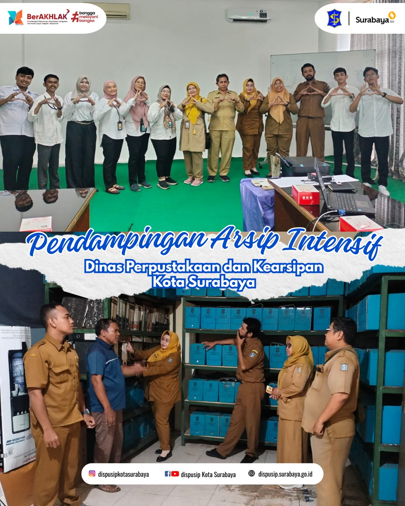

Jumlah Pengunjung
Perpustakaan
Jumlah Buku
Dispusip Kota Surabaya
Jumlah Arsip
Dispusip Kota Surabaya
Tingkat Kepuasan Masyarakat
Januari 2026
Tingkat kepuasan berdasarkan survei kepuasan masyarakat terhadap pelayanan Dispusip Kota Surabaya selama satu bulan terakhir.
Informasi terjadwal kegiatan literasi yang diselenggarakan Dinas Perpustakaan dan Kearsipan Kota Surabaya untuk mendorong partisipasi serta budaya literasi masyarakat.

1–28 Februari 2026
 Perpustakaan Umum Balai Pemuda Kota Surabaya
Perpustakaan Umum Balai Pemuda Kota Surabaya

31 Januari 2026
 Perpustakaan Umum Rungkut Surabaya
Perpustakaan Umum Rungkut Surabaya

Setiap Hari
 Jl. Raya Pakal Surabaya No.27
Jl. Raya Pakal Surabaya No.27
Informasi terjadwal kegiatan kearsipan yang diselenggarakan Dinas Perpustakaan dan Kearsipan Kota Surabaya untuk mendukung budaya tertib arsip dan peningkatan literasi kearsipan.

6 Februari 2026
 Dinas Ketahanan Pangan dan Pertanian
Dinas Ketahanan Pangan dan Pertanian

6 Februari 2026
 Dinas Ketahanan Pangan dan Pertanian
Dinas Ketahanan Pangan dan Pertanian

6 Februari 2026
 Dinas Ketahanan Pangan dan Pertanian
Dinas Ketahanan Pangan dan Pertanian

Isi artikel 1

Isi artikel 2

Isi artikel 3

Isi artikel 4

Isi berita 1

Isi berita 2

Isi berita 3

Isi berita 4